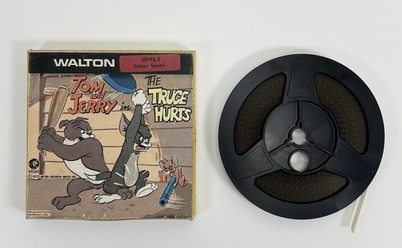
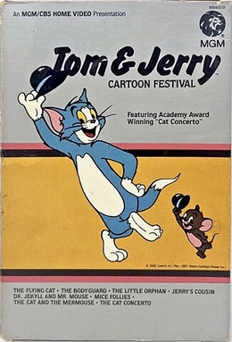

Like many animated cartoons from the 1930s to the 1950s, Tom and Jerry featured racial stereotypes. After explosions, for example, characters with blasted faces would resemble blackface stereotypes, with large lips and bow-tied hair. Perhaps the most controversial element of the show is the character Mammy Two Shoes, a poor black maid who speaks in a stereotypical "black accent". Joseph Barbera, who was responsible for these gags, claimed that they did not reflect his racial opinion; they were just reflecting what was common in society and cartoons at the time and were meant to be humorous. Today, the blackface gags are often censored when these shots are aired.
As early as 1981, MGM/CBS released Tom and Jerry Cartoon Festival, the very first Tom and Jerry release on numerous home video formats, including VHS, Betamax, CED Videodisc, and Laserdisc, and mostly consisted the original Hanna-Barbara-era shorts (excluding the CinemaScope cartoons). The VHS and Beta versions released a total of four volumes up through 1984, while releases on the other two formats were discontinued after the second volume due to marketing difficulties of Laserdisc and CED players during that time period.

Between the late 1980s and early 1990s, MGM/UA Home Video released a series of Tom and Jerry VHS tapes under their Cartoon Movie Stars banner. Also in the early 1990s, MGM/UA released a released three volumes of Laserdisc box sets for collectors, entitled The Art of Tom & Jerry. Volumes 1 and 2, contain all of the Hanna and Barbera era shorts in chronological order, with the CinemaScope shorts being presented in letterboxed versions. The cartoons were mostly presented uncut with three exceptions: His Mouse Friday, where the cannibal's dialogue had been removed, Saturday Evening Puss, which is the re-drawn version with June Foray's voice added, and The Framed Cat where Mammy-Two Shoes' dialogue had been redubbed. A third volume to The Art of Tom & Jerry was released and contains all of the Chuck Jones-era Tom and Jerry shorts, however omitted any of the Gene Deitch-era shorts. This was the final home media release of Tom and Jerry release by MGM.
In 1999, three years after Time Warner's acquisition of Turner Broadcasting, the rights to Tom and Jerry (along with the rest of MGM's Pre-1986 library) moved from MGM to Warner Bros. with Warner Home Video handling all future releases. DVD and Blu-Ray releases of Tom and Jerry have encountered difficulties in terms of restoration, due to most of the original film negatives being destroyed in vault fire in the 1970s, leaving only inferior duplicate copies.
In April 2004, Warner Home Video released Tom and Jerry: The Classic Collection in Regions 2 and 4; a six disc double-sided DVD box-set in the United Kingdom, and 12 single-layer individual DVD volumes issued throughout Western Europe and Australia. The set includes almost every single Tom and Jerry cartoon released between 1940 and 1967 in chronological order; with the exceptions of The Million Dollar Cat and Busy Buddies, were not included for unexplained reasons. The cartoons on this set were sourced from unrestored 1980s Turner broadcast prints as seen on TNT and Cartoon Network, and therefore many of the shorts were censored: with many blackface gags being cut (including His Mouse Friday being heavily edited) and almost all of Mammy Two Shoes' dialogue being redubbed by Thea Vidale. Also the CinemaScope cartoons were presented in 4:3 pan and scan, with the exceptions of The Egg and Jerry, Tops with Pops and Feedin' the Kiddie which were released in non-anamorphic widescreen as seen on The Art of Tom and Jerry laserdiscs. The Classic Collection also contained no bonus material. Unlike the U.S. DVDs however, Mouse Cleaning and Casanova Cat were included on these sets and were presented uncut.
There have been several Tom and Jerry DVDs released in Region 1 (United States and Canada), such as the Tom and Jerry's Greatest Chases DVDs. In October 2004, Warner Home Video released the first volume of Tom and Jerry Spotlight Collection; a two-disc set with an assortment of Tom and Jerry cartoons presented in random order. Much like the U.K Classic Collection most of the cartoons were unrestored and sourced from the '80s Turner prints, however the CinemaScope cartoons were restored in their correct 2.35:1 aspect ratios and released in 16:9 anamorphic widescreen. The Spotlight Collection also contained numerous special features. In October 2005, Volume 2 of the Spotlight Collection was released - which much like the first volume had a random assortment of cartoons, sourced from unrestored Turner Prints (except the CinemaScope cartoons), and contained numerous extras - including an introduction by Whoopi Goldberg about the politically incorrect content in some cartoons. Despite this however, some of the cartoons on Volumes 1 & 2 were censored: having cuts and redubbed Mammy Two Shoes dialogue. Warner Home Video eventually offered a disc replacement program offering fixing these errors, and modern pressings of Volumes 1 & 2 present the cartoons uncut. A third and final volume of the Spotlight Collection was released in September 2007 - bringing a total of 112 of the 114 original Hanna and Barbera-era Tom and Jerry shorts having been released. Volume 3 received a negative response from fans due to His Mouse Friday being edited (with an extreme zoom-in towards the end to avoid showing a pygmy cannibal), the CinemaScope cartoon Pup on a Picnic being cropped to 16:9, and the cartoons Mouse Cleaning and Casanova Cat being excluded from these sets due to brief blackface gags.
In October 2011, Warner Home Video released the first volume of the Tom and Jerry Golden Collection on DVD and Blu-ray. Unlike the Spotlight Collections, the Golden Collections were aimed at adult collectors. This time the cartoons were presented uncut, in chronological order and restored from CRI negative elements resulting in a much more pristine image quality. Despite this however, 12 cartoons (Puss N' Toots, The Bowling Alley Cat, Sufferin' Cats, The Lonesome Mouse, The Zoot Cat, The Million-Dollar Cat, Puttin' on the Dog. Mouse Trouble, Quiet Please!, The Milky Waif, Heavenly Puss and Jerry's Diary) were sourced from 1960s Metrocolor prints, resulting in a washed out image, which drew some criticism from fans and collectors. A second volume of the Golden Collection series was scheduled to be released in June 2013. However, in February 2013, it was announced by TVShowsOnDVD.com that - much like the Spotlight Collections - Mouse Cleaning and Casanova Cat would not be included. Many collectors and fans posted negative reviews of the product on Amazon and other various websites, which eventually led Wanrer Home Video to cancel Volume 2 and the Golden Collection series. The transfers made for Volume 2 (excluding Mouse Cleaning and Casanova Cat), were eventually made available on the ITunes Store and YouTube Movies.
Prior to 2015, the Gene Deitch-era Tom and Jerry shorts saw limited availability on home media, with the most notable release being on the U.K. Classic Collection box-set. On June 2, 2015, Warner Home Video released Tom and Jerry: The Gene Deitch Collection DVD which contained all thirteen shorts as well as special features. The Chuck Jones-era Tom and Jerry shorts were released in a two-disc set titled Tom and Jerry: The Chuck Jones Collection in June 2009.
In February 2025, to coincide with Tom and Jerry's 85th Anniversary, Warner Archive Collection released Tom and Jerry: The Complete CinemaScope Collection, a single disc Blu-Ray set which contained all 23 CinemaScope Tom and Jerry cartoons presented in their correct aspect ratios - including Pup on a Picnic. The set also inclued three non-Tom and Jerry CinemaScope cartoons by Hanna and Barbera - Good Will to Men (1955), Give and Tyke and Scat Cats (both 1957) - which were included as extras. This set received mostly positive feedback from fans and collectors.